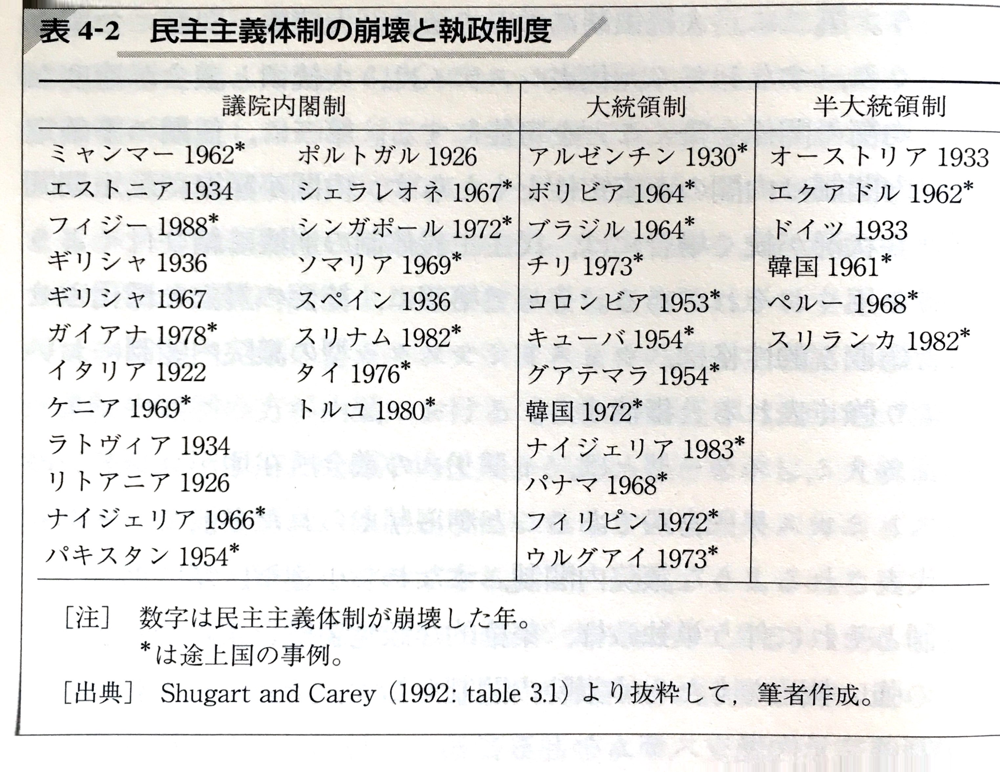
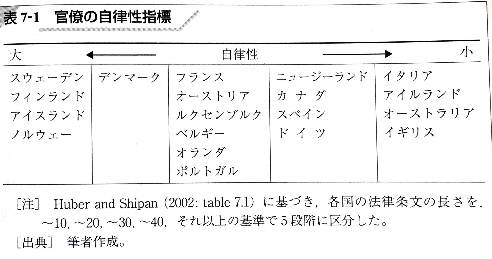
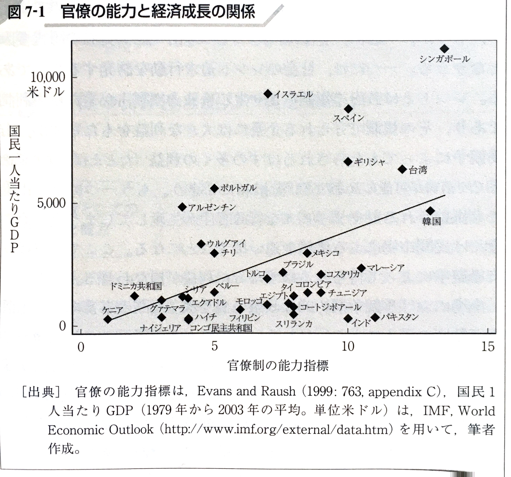

政治学概論Ⅱ ＃12 比較政治学（4）
執政制度と官僚制度
![]()
2025年2月6日
キーワード
キーワード
- 執政
- リーダーシップ
- 自律性
- 能力
リーディング・アサインメント
リーディング・アサインメント
P202 官僚の自立性と能力の関係性に注目した 官僚はこれまでのイメージだと議会で政治家に助言している様子を見ているばかりであったが、反対に政治家が官僚の自立性をコントロールしていくという認識がなく、新たな考えとなり重要だと思ったから。また、官僚が政治家の言いなりになるのか自由になるのかで能力の出し方が変わると知り、官僚をどのように扱うかで政治が大きく変わると思ったから（大石）。
7ページの官僚の自律性が高まること 官僚の自律性が高まることには、メリットもあればデメリットも存在すると考えたからである。特に、官僚が自分たちの判断で独立して行動する場合、政治家や市民社会との関係が希薄になったり、政策決定におけるバランスが崩れたりするリスクが生じることがある。官僚の自律性が高まると、政治家の影響力の低下によって、選挙で得た支持を基に政策を決定するべきという民主的な観点から離れていくと考えられる。自立性や透明性、責任のバランスをとることはもちろん、力の均衡と分立がいかに重要なのかを裏付けている箇所だったと感じた（加藤）。
リーディング・アサインメント
は，官僚の自律性（非民主性）と能力（専門性）をどの程度まで重視するかによって特徴づけられる政治制度として 整理できる。p.4 官僚制について、自分自身あまり考えたことがなく、特定の団体などと癒着して悪い方向へと向かうイメージしかなかった。しかし、官僚制が持つ専門性というのは、国も政策を実現できるかなど考えるうえで非常に必要な能力であると思った。政治活動において、本当にそれは実現できるのかという政策を耳にすることがある。そのなかで、官僚の助言というのは必要不可欠であるのではないかと感じた。官僚の自律性は大きな問題ではあるが、官僚制そのものを否定することはできないと思った（小松原・け）。
官僚個々人の能力を十分に引き出すような組織構造(204頁) 官僚制の専門性や人事管理の話が書いてあり，政治学概論Ⅰの「ゼネラリストとスペシャリスト」の話を思い出した。日本では数年ごとの部署異動が多く，その現場になれるころには，次の部署に行くことが多いため，その分野のスペシャリストが育ちにくいことを学んだ覚えがある。どこの学部を卒業したのかといった官僚の学歴だけでなく人事管理による専門性についても考える必要があると思った（田辺）。
リーディング・アサインメント
p206-207 意思決定手続きへの制約と委任の範囲の関係について 政治家による官僚への権限委譲の程度と決定手続きへの制約を数量化したことで意思決定手続きへの制約と委任の範囲に負の関係が見いだせること、つまり官僚に与えられる権限委譲の幅が大きいほど，決定に関する手続きが多く課されることが明らかになったという部分がとても面白いと感じたから。その部分に関しては面白いと感じる一方でそうなってしまう要因が読み取れず疑問に感じた（原田）。
執政制度
事例：チュニジア
- ジャスミン革命（2010-2011年）
- 「アラブの春」へ
- アラブの民主化のモデル
- 新憲法採択、新議会、新大統領、新政府誕生（2014年）
- 大統領：外交と治安権限
- 首相：内政
- 三権分立
- ➡ 独裁政権が生まれにくい憲法へ
事例：チュニジア
- 新憲法体制下の政治
- 優先課題が異なる政党による連立内閣：「決められない政治」
- 有効な経済対策を打ち出せず
- サイード大統領就任
- 大統領令、憲法第80条「緊急事態条項」の適用を宣言（2021年7月）
- 首相解任
- 議会の停止
- 最高司法評議会の解散（2022年2月）
- 憲法改正国民投票実施（2022年7月）
- サイード大統領、再選（2024年10月）1
- 大統領令、憲法第80条「緊急事態条項」の適用を宣言（2021年7月）
執政制度の類型
- 執政制度（Executive Institution）の特徴
- 行政部門のトップリーダーの選出方法
- トップリーダーと議会や国民との関係を規定するルール
- Cf. なぜ「行政」と言わないのか
- 執政：国民の代理人として意思決定を行う政治的主体
- 行政：政治家による決定を単に執行する機関
- Cf. なぜ「行政」と言わないのか
- 比較政治学の問題関心
- 執政制度の違いによって、政治過程や政策選択はどのような特徴が生じるのか
- 政治学全般の問題関心
- 大統領制や首相公選制を求める（一部の）国民の声への応答責任
- 共有の知見：大統領制や首相公選制という制度導入だけでは、「強い」首相は生まれない
執政制度の類型
「強力なリーダーシップ」を求める人々は、日本の政治制度を大統領制に変えようというが、彼らの考えには、大統領制だからこそ政治家が官僚を統制できるという思いが含まれている。〔略〕日本で官僚の統制について問題が起こるのは、「官僚内閣制」的な慣行を、議院内閣制の固有の現象であると考えるからではないだろうか（飯尾潤 (2007), p.156）
執政制度の類型
類型基準
- 執政長官がどのように（だれに）選ばれるか
- どのように（だれに）解任されるのか（責任を負うのか）
執政制度の類型
3類型
- 大統領制（presidential system; presidentialism）
- 権力の分立
- 議会から自律性をもつ
- Cf. 分割政府（divided government）：議会多数派と大統領の所属政党が違う場合
- 議院内閣制（parliamentary system; pariamentarism）
- 権力の融合
- 行政権と立法権は首相の手の下で融合
- 半大統領制（semi-presidentialism）
- 権力の分有
- 議会からの自律性をもつ大統領と議会多数派の信任に依拠した首相
- 選挙によって、統一政府や議院内閣制に類似した協調的関係、また分割政府となる
- 例：フランス第五共和制（現フランスの政治体制）
- 権力の分有
研究史：執政制度と民主主義体制の安定
- 1980年代以降、新興民主主義国の誕生
- 権威主義体制への逆戻りを懸念
- 政治（学）の課題：いかに安定的な民主主義体制を樹立するか
1. 大統領制批判論
- リンス（Juan José Linz）
- 大統領制：硬直的；停滞的；対立構造を深化させる危険性；ポピュリズムの危険性
- 上記の結果、軍部による介入を招き、民主主義体制自体が崩壊する（軍事政権；権威主義体制への復帰）
- 例：1960年代のラテンアメリカ諸国
- 大統領制：硬直的；停滞的；対立構造を深化させる危険性；ポピュリズムの危険性
- プシェヴォルスキ（Adam Przeworski）ら
- 1950年から1990年の141カ国を対象とする、体系的な計量分析を実施
- 経済発展水準、支配的な宗教、植民地経験などの諸変数の影響を統制したうえで、議院内閣制が大統領制より安定的であることを示す
研究史：執政制度と民主主義体制の安定
2. 大統領制擁護論
- シュガート（Matthew S. Shugart）ら、大統領制批判論に反論
- 大統領選の利点
- 説明責任が明確；予測可能性が明確；大統領と議会との適度な抑制と均衡が可能；任期が確定している；社会の対立を深化させるのは、（ウェストミンスター型の）議院内閣制の特徴
- リンスらの方法論的問題
- ラテンアメリカ諸国の事例が中心
- 対象諸国を広げると、大統領制と体制の不安定な関係は見られず
- 大統領選の利点
研究史：執政制度と民主主義体制の安定
- 表4-2: 民主主義体制の崩壊と執政制度
研究史：執政制度と民主主義体制の安定
たとえば、リンスの指摘する大統領と議会との関係の行き詰まりは、大統領制という執政制度それ自体ではなく、大統領が議会で多数党によって支持されないような政党勢力の配置状況に起因する問題だという。したがって、選挙制度などによって政党システムを安定的にすることができれば、危機にいたる状況を回避することが可能となる（建林正彦・曽我謙悟・待鳥聡史 (2008), p.112）
執政制度とリーダーシップ
⑴ 執政制度をめぐる、二つの新しい関心
- マクロ（体制の安定性）からミクロに
- 大統領制と議院内閣制のバリエーションの探求
- 制度の帰結として、政策選択やリーダーシップの探求
執政制度とリーダーシップ
⑵ リーダーシップをめぐる比較研究
1) 従来の通説
- 首相の方が大統領よりも強いリーダーシップをもつ
執政制度とリーダーシップ > リーダーシップをめぐる比較研究
2) 近年の通説
- 首相のリーダーシップ：議員多数派の「質」に依存
- 多数派の構成；与党の政党組織構造（集権度）
- 大統領のリーダーシップ
- 大統領制の制度設計：大統領も議会も強力なリーダーシップを振るえないことを意図（権力の均衡）
- 大統領制に付随する諸制度、他の政治制度の組み合わせに依拠
- 事実上の立法権
- 拒否権；大統領令（decree）制定権
- 大統領の党派的政治力
- 議会政党の一体性；議会における大統領支持派
- Cf. アメリカ上下両院院内総務（Majority Leader）
- Cf. 表4-4 大統領権限のバリエーション（シュガートとハガード）
- 大統領選挙と議会選挙のタイミング
- 同時の場合（4年に1度）：コートテール効果あり（大統領の着ているコートの裾にあやかって、議員が当選する）
- 大統領のもつ人事権の範囲
- 議会政党の一体性；議会における大統領支持派
- 事実上の立法権
日本における首相のリーダーシップ
⑴ 「弱い」首相
- 多数派の「質」：与党の構成と集権度
- 戦後ほとんどの政権：自民党単独政権
- 集権度：分権的
- 派閥；党内機関（例：政務調査会部会）；地方組織（例：後援会組織）
- 選挙制度（中選挙区制の帰結）
日本における首相のリーダーシップ
⑵ 例外としての「大統領的首相」
- 中曽根内閣
- 政治的任用による個人的スタッフ（審議会；経済財政諮問会議）の活用
- マスメディアの活用（国民への直接的訴え）
- 小泉内閣
- 小選挙区比例代表並立制導入により、党内の集権度を高めることに成功
- 例：首相の政策と異なる議員を公認候補から外す（小泉チルドレン、「自民党をぶっ壊す」＝「自民党」＝経世会の弱体化）
- マスメディア、インターネットの活用
- 「ぶら下がり会見」（1日2回）
- メールマガジン
日本における首相のリーダーシップ > 例外としての「大統領的首相」
- 共通点：自民党の主流派ではない
- 党内支持基盤の脆弱さ
- 審議会、官邸を用いて、省庁官僚の抵抗を封じ込める
- 相違点：平成の改革の以前・以後
- 中曽根：従来の意思決定を踏襲
- 派閥均衡政治
- 小泉：従来の意思決定を刷新
- 官邸主導
- 中曽根：従来の意思決定を踏襲
- ➡ ウェストミンスター型（イギリス型）に近い「強い首相」へと変化
- ただし、ウェストミンスター型においても、このような運用は例外的
日本における首相のリーダーシップ
⑶平成の改革後
- 第二次安倍内閣の特異性
- 自民党最大派閥出身
- 衆議院議員選挙解散のタイミング
- 二階幹事長の党内調整力（候補者調整権限）
- メディアコントロール
- 政権基盤が安置しているがゆえに、中曽根、小泉のような、国民的支持を調達する必要なし
- 批判的なテレビ報道に対して、放送法第4条（「政治的公平」）を根拠に権勢・統制
- 自民党ネットサポーターズクラブ1
官僚制度
Yes, Prime Minister
- 振り付けをする官僚と、それに素直に従う首相

- Yes, Prime Minister Best of Series 1 | BBC Comedy Greats（via YouTube）
- 官僚：「この国」という言葉についてですが、マークハムと私は、このスピーチとは少し異なる草案を作成しています。
- 首相：見てみよう。（音読）「もちろん、政府支出という高いハードルを越えるために、幅広い選択肢を検討するつもりだ」。しかし、この先、文書には何も書いていない。ああ、ありがとう。だけど、私はこの草案が気に入らないよ。
官僚の自律性と能力
- 官僚制
- 選挙を通じてではなく任命によって行政機関の職位に就いている公務員とその活動を規定する、公式および非公式のルール
- 官僚の行動を規定する制度
- 国民や政治家が官僚に対してもつコントロールの程度
- = 官僚の「自律性」
- 官僚の能力（専門性）をどの程度重視するしくみとなっているか
- 政策形成の補助；政策執行を行うための専門知識や判断力
- 非自律性と能力（専門性）はトレード・オフ
- 非自律性と能力（専門性）をそれぞれどの程度重視するかは各国によって異なる
- 国民や政治家が官僚に対してもつコントロールの程度
官僚の自律性と能力 > 例：新型コロナウイルス対策
- 出典：「強権人事、かたやアットホームな官邸 主の関心競った末」（『朝日新聞』2021年1月15日）
- 出典：「コロナ禍、矢面に立った尾身茂さん 政治リーダーに求める「語る力」」（『朝日新聞』2024年5月27日）
- 政治家｜官僚｜有識者
官僚の自律性と能力
- 官僚の自律性の4側面
- 予算や組織編成に対する政治家のコントロールの程度
- 官僚人事への政治的な介入の程度 1 2
- 行政官庁の意思決定手続きに対するコントロール程度
- 官僚に対する権限委譲の程度を通じてのコントロールの程度
- 官僚の能力
- 官僚個々人の能力
- メリット・システム（資格任用制）；スポイルズ・システム（自由任用制）
- 個々人の能力：メリット・システム＞スポイルズ・システム
- 教育水準（学歴）
- メリット・システム（資格任用制）；スポイルズ・システム（自由任用制）
- 個々人の能力を引き出すための組織構造
- 身分保障；適切な人事管理
- 官僚個々人の能力
国際比較（比較行政学）
- 自律性ついての各国の実態把握
- アバーバックらの国際共同研究（意識調査）
- 西ヨーロッパ諸国の政治家と官僚を対象とするサーベイ
- それぞれの主観的認識を問う
一方において官僚は、技術や知識の変化に敏感に反応し、効率性を重視し、組織化された顧客だけを対象にすることが多い。他方において政治家は、社会の要水に応えることが政府の役割であると考え、組織化されていない小さなシグナルにも反応して、イデオロギーに基づいて判断を下す。そのために、官僚は定義されている問題について、利害の均衡を維持することには長けているが、政治家と違って大きな変革には適さない。そのような場合に官僚が変革をリードしようとすると多元主義的停滞、すなわち利害が対立して現状を変更できない状態に陥る可能性が高い（真渕勝 (2020), pp.57–58）
- 西ヨーロッパ諸国の政治家と官僚を対象とするサーベイ
国際比較（比較行政学）
- シュナイダーらのキャリアパターン研究
- 客観的な指標にもとづく官僚の自律性を測定
- 採用方法（社会階層、学歴を含む）；キャリアパターン
- Cf. 竹本信介 (2020)「事務次官歷任表 2019〜1977」
- 採用方法（社会階層、学歴を含む）；キャリアパターン
- a: 国家アクター型
- 官僚：独自集団として社会から自律的存在
- b: パワーエリート型
- 官僚：社会集団から影響を受け非自律的存在
- 日本：国家アクター型だが、省庁横断的人事がなく特定の社会集団と継続的に接触する傾向あり（＝非自律的要素あり）
- 客観的な指標にもとづく官僚の自律性を測定
国際比較（比較行政学）
- エプスタインとオハロラン
アメリカを対象とする研究
政治家による官僚への権限委譲の程度と決定手続きへの制約を数量化
➡ 両者に負の関係あり
官僚に与えられる権限委譲の幅が大きいほど、決定に関する手続きが多く課されることが明らかにされた（建林正彦・曽我謙悟・待鳥聡史 (2008), p.207）
国際比較（比較行政学）
- ヒューバーとシッパン
- 官僚への権限委譲の程度を、法律の長さをもとに指標を作って計測
- 議院内閣制を採る19カ国の男女の雇用機会均等法に関する法律を分析
国際比較（比較行政学）
- Cf. 表7-1: 官僚の自律性指標
国際比較（比較行政学）
- 能力ついての各国の実態把握
- アバーバック
- 出身地；階層；教育
- ただし、能力そのものを問う構成になっていない
- エヴァンスとラウシュ（ウェーバー指標）
- 発展途上国35カ国を対象
- 公務員採用における資格任用制の比重；キャリア；賃金；名誉などの10項目についてのアンケート調査による
- 発展途上国35カ国を対象
国際比較（比較行政学）
- Cf. 図7-1「官僚の能力と経済成長の関係」
官僚の自律性と能力の帰結
通説：
- 官僚の自律性ゆえに、市民の望むような政策とは程遠い政策が成立
- 例：戦前日本の軍部の暴走；プレミアムフライデー
- ➡ 官僚に対する民主的コントロールの不十分さを批判
対抗仮説（本書）：
- この通説は十分なデータの裏付けを欠く
- またこのような通説は、日本に限らず、見られる
官僚の自律性と能力の帰結 > 対抗仮説（本書）
検討すべきこと①
- 政策の量が増え、複雑化したからといえ、そうした法律案のすべてが官僚に委ねられていたのか
- ➡ データからいえること：官僚への権限委譲とともに、制約条件も増加
検討すべきこと②
- 官僚の政策選好は国民の政策選好とズレているのか
- ➡ 事例からいえること：国民の支持が必要とされる際は、国民への応答性を高める（大蔵省の金融ビッグバンの導入推進）
官僚の自律性と能力の帰結
専門性についての近年の研究動向
- 官僚の能力（専門性）は政府の政策の目標達成度を変える
- 研究史：政策の目標として経済成長に着目
- ジョンソン（通産省研究）
- 官僚の能力の高さと政治家からの自律により、戦後日本を発展へと導く（開発型国家）
- サミュエルズ
- ジョンソンへの反論：通産省の民間企業への統制は、ジョンソンがいうほどは強くなし
- エヴァンズとラウシュ
- Cf. 図7-1「官僚の能力と経済成長の関係」
- 官僚の能力（ウェーバー指標）と、経済成長
- 正の相関を発見
- ジョンソン（通産省研究）
官僚の自律性と能力の帰結 > 専門性についての近年の研究動向
このような研究動向を見るかぎり、官僚の能力や専門性の高さは、経済発展の原動力となるとはいえないが、官僚が経済発展の阻害要因とはならないよう保証する効果をもつということはできるのではないだろうか（建林正彦・曽我謙悟・待鳥聡史 (2008), pp.215–216）
官僚の自律性と能力の規定要因
- 官僚の自律性と能力
- 政治家による選択の産物（政治家によって左右される）
- 政治家が官僚に委任する4条件
- 官僚が多くの知識と情報をもっている場合
- 官僚が政治家と同じ政策選好をもっている場合
- 官僚への委任をおこなわないがゆえに、政治家が自分たちで政策立案を行う費用と危険性が低い場合
- 官僚の裁量縮小に伴う、政治家による、詳細な法律制定の費用や専門知識が少ない場合
日本の官僚制の特徴とその帰結
⑴ 戦後日本の2つの時代
- 官僚の自律性が大きい時代：1960-1980年代
- ただし大臣に対してのみ
- 自民党族議員に対しての自律性は小さい
日本の官僚制の特徴とその帰結
- 官僚の自律性が相対的に小さい時代：戦後改革期；1990年代以降
- 自律性と非自律性：フォーマルとインフォーマル
- フォーマルな自律性
- 予算編成の主導権：1960年代に入り大蔵省が掌握
- 国会法改正により、歳出を伴う議員立法に制約（牧原出 (2003)）
- 組織編成：国家行政組織法改正により、局以下は政令により編成可能に（1984年）
- 官僚人事：政治家による個別介入は例外的
- 行政手続法の欠如（1993年に制定）
- 政治家による委任の程度が大きい
- 各省設置法における「○○に関する事務」を扱うという規定を根拠に、幅広い裁量権を行使
- 予算編成の主導権：1960年代に入り大蔵省が掌握
日本の官僚制の特徴とその帰結 > 2. 官僚の自律性が相対的に小さい時代
- インフォーマルな自律性の棄損
- 族議員による官庁人事への介入
- 与党事前審査
- ➡ 官僚、大臣と族議員から、二重の統制を受ける
- 一党優位政党制による同質化
- 官僚の高い能力を維持することが可能に
日本の官僚制の特徴とその帰結
日本の場合、政策選好の近さがいわば自動的に調達されたために、自民党は官僚の人事に介入することなく、能力重視の選抜を維持することができたのである（建林正彦・曽我謙悟・待鳥聡史 (2008), p.231）
- 官僚による政治的調整
戦後初期には政治的調整を嫌い政党からの超然性を指向していた官僚も、むしろ政治家と積極的に接触を行い、利害の調整などに踏み出していくことで政策形成を進める方向へと変質をとげていった。より正確にいえば、利害調整に積極的に関与する官僚ほど省庁内部で評価されるようになり、幹部に就きやすくなったと考えられる（建林正彦・曽我謙悟・待鳥聡史 (2008), p.231）
- 原局型官僚から官房型官僚へ（牧原出 (2003)）
- 国士型官僚から調整型官僚へ（真渕勝 (2004)；真渕勝 (2020), pp.71–72）
日本の官僚制の特徴とその帰結
⑵ 1990年代の政治改革後の自律性
- 選挙制度の改革
- 自民党一般議員に行動変容をもたらす
- 一般議員：政党執行部に権限を委譲
- 官僚：内閣と関係を強める（官邸主導へ）
- ➡ 官僚：内閣に対する自律性の低下
- 族議員からの自律性の強化
- 自民党一般議員に行動変容をもたらす
- 1990年代以降のグローバル化と情報化
- 官僚に求められる専門知識：複雑化；増大
- 名門大学出身を採用、OJTで育成するというシステムの限界
- 官僚に求められる専門知識：複雑化；増大
宿題
宿題
- 授業の感想
対面授業の際は、各コマではなく、一日の授業うちで１つのトピックについて書いて下さい
- リーディングアサインメント
- レポート課題
内容､期日については「提出物（提出先）」を参照